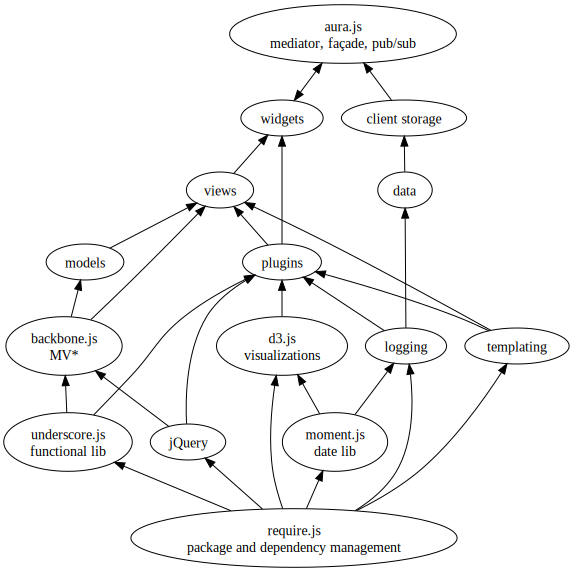

MetroWest Web Developers
Add sensibility to Packaging and Organization with require.js and aura.js
2012-10-18
Welcome All
This will be the first in a series on how to take frontend development seriously.
We'll start by looking at real world ways that both require.js and aura.js add clarity and a path to maintainability with client only web apps.
And So it Begins
Adding the Base
Visibility
Unification
Getting Serious

The Hard Stuff
Awesome!